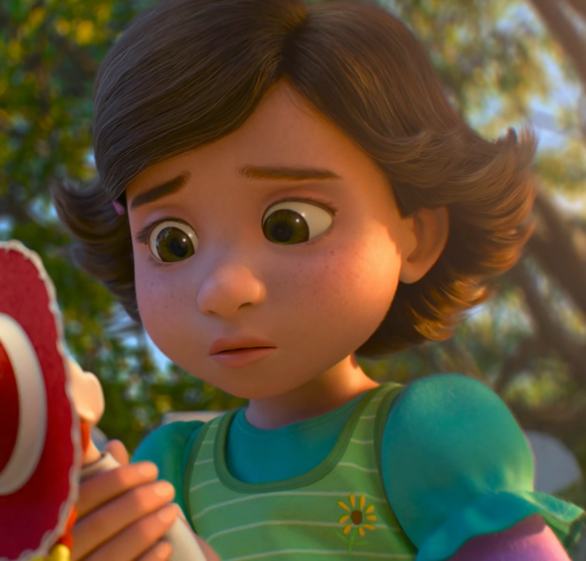
Bonnie
Nova dona dos brinquedos de Andy, em Toy Story 3, quando o menino inicia a vida acadêmica

Nova dona dos brinquedos de Andy, em Toy Story 3, quando o menino inicia a vida acadêmica
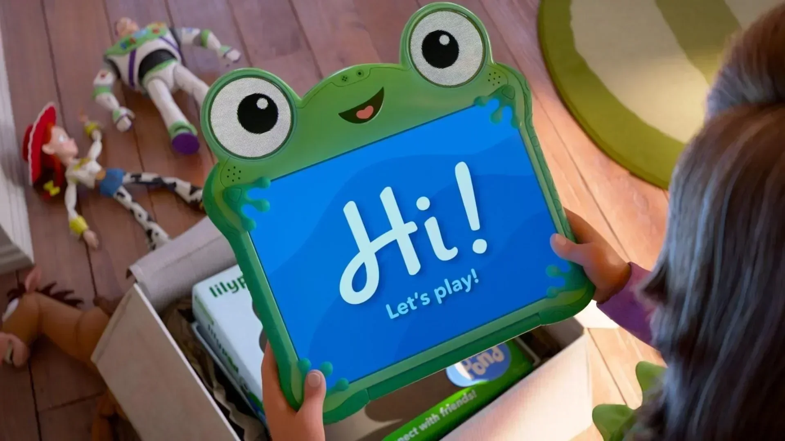
Antagonista da trama em forma de tablet com design de sapo que compete com os brinquedos pela atenção de Bonnie
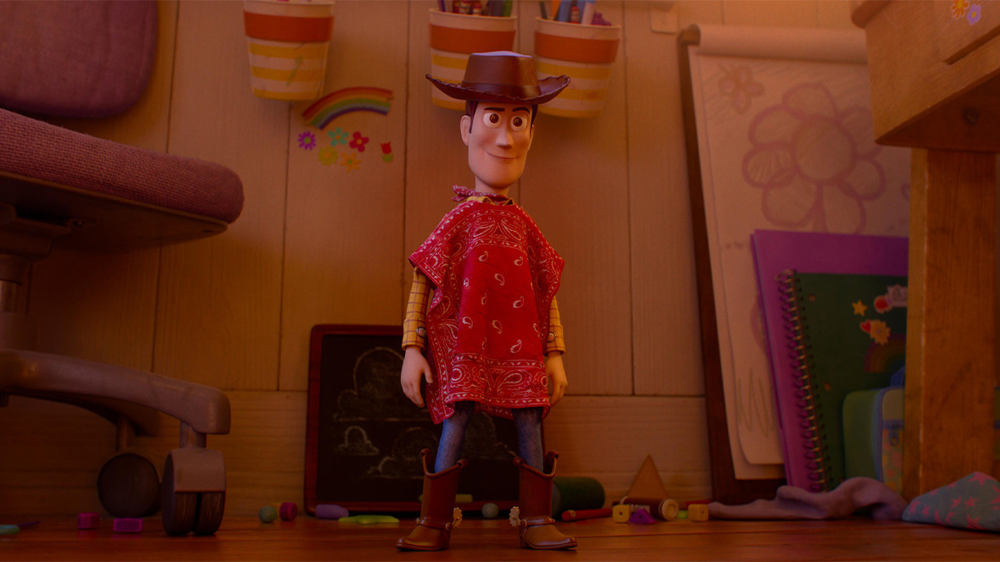
Xerife caubói leal que retorna para ajudar seus amigos a reconquistarem a menina Bonnie
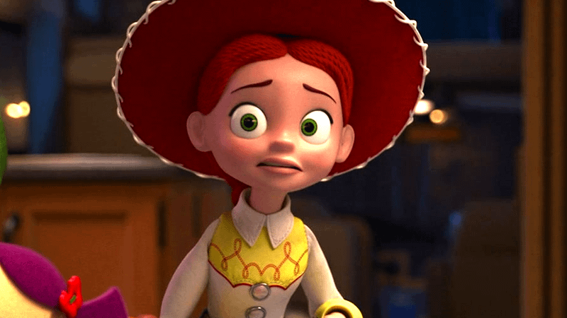
Protagonista e líder dos brinquedos, que compete com Lilypad pela atenção de Bonnie, enquanto supera seus antigos medos de rejeição
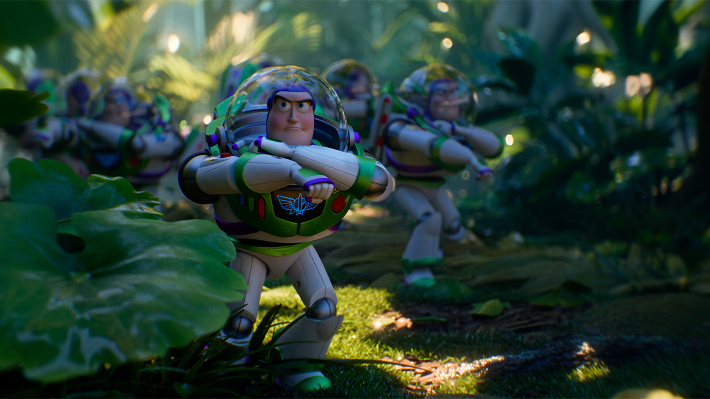
Braço direito de Jessie na liderança dos brinquedos. Ele enfrenta um exército defeituoso de clones de si mesmo para salvar a infância de Bonnie
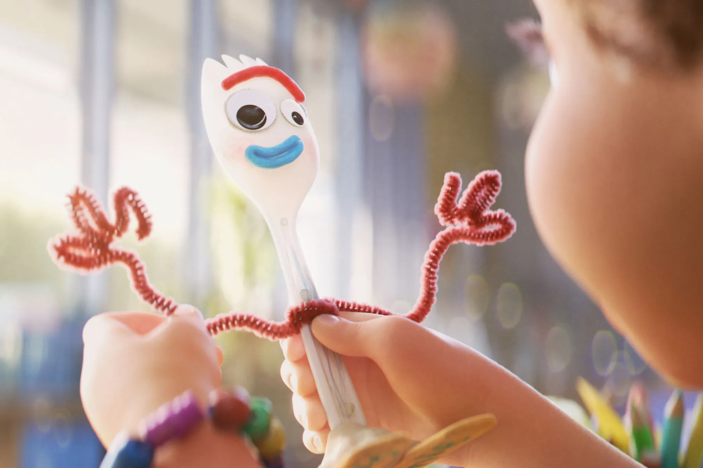
Um dos brinquedos mais leais de Bonnie, feito por ela mesma. Ele ajuda o grupo a combater a distração das telas eletrônicas
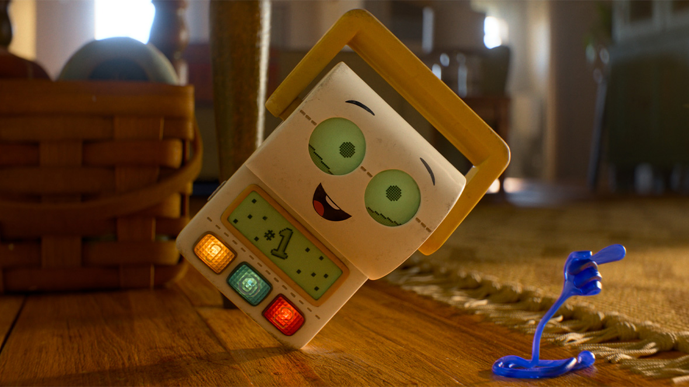
Brinquedo educativo em formato de rolo de papel higiênico, feito para ensinar crianças a irem ao banheiro.
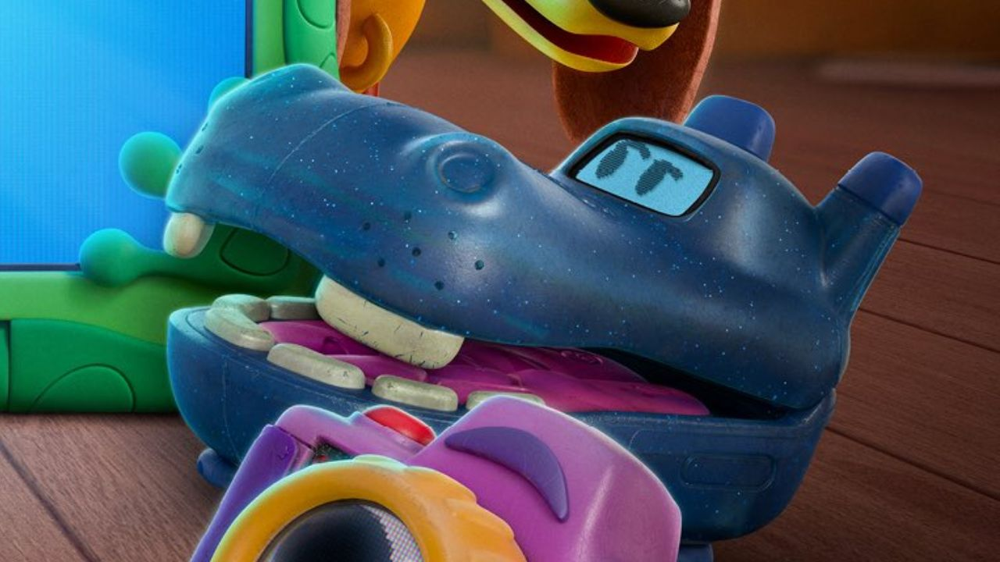
É um brinquedo em formato de celular antigo flip com GPS, estilizado como um hipopótamo azul. Ele ajuda o grupo após ser abandonado
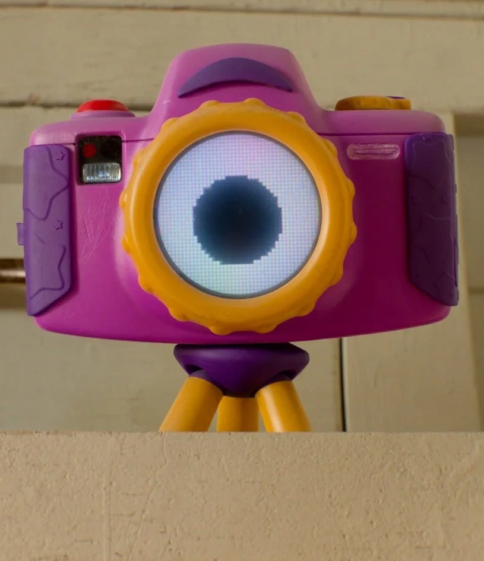
É uma câmera digital colorida e antiga. Ela atua como espiã da equipe, usando suas lentes para registrar as situações
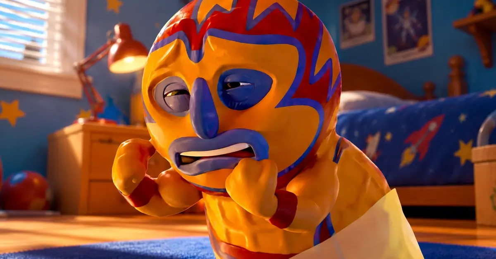
Brinquedo de plástico em formato de amendoim lutador. Faz parte dos brinquedos esquecidos no rancho de Blaze e tem um medo muito grande e cômico da tecnologia
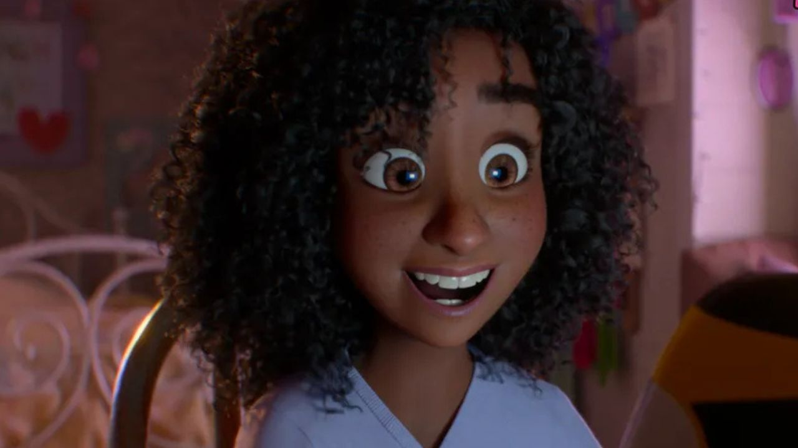
Menina de 9 anos que vive em uma fazenda. Ela mora na antiga casa de Emily (primeira dona de Jessie) e se torna a nova grande amiga de Bonnie
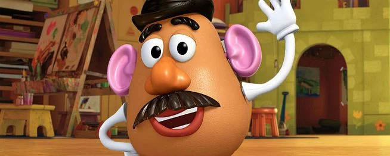
Brinquedo clássicos e ranzinzas do grupo. Ele apoia Jessie e Buzz na missão de combater a distração das telas de Bonnie e manter o grupo unido